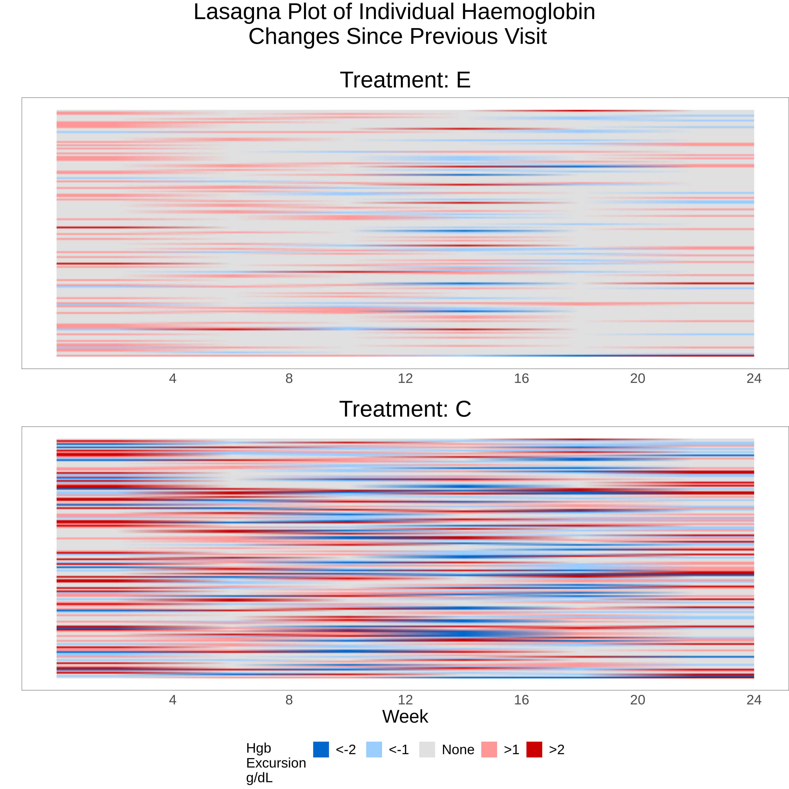

Haemoglobin in Anaemia
This month’s example dataset comprised haemoglobin (hgb) concentrations over time from a simulated randomised trial in anaemia patients, comparing an experimental treatment with an active control group. The main study objective was to demonstrate a mean hgb value within a target range at the end of the study (week 24). However anaemia treatments have a known safety issue in that large or rapid increases in hgb levels are associated with increased cardiovascular risk. Therefore a successful treatment should also demonstrate stability and control in hgb levels, with increases in hgb over a 4 week period being ideally limited to <1 g/dl, with increases >2 g/dl being considered a safety risk. The challenge was to produce data visualizations that provide insights into the variability of hgb in addition to the efficacy.
A more detailed description and link to the data can be found here.
Example 1. Trellis Plot

link to code
high-resolution image
{kind=link}
This is a good example of a Trellis plot; in this example the left and right panels represent subgroups of patients with high and low hgb variability, respectively. High and low hgb variability in this case has been defined in terms of whether each subject had a change in hbg level of >2 g/dl between any two consecutive visits. The legend includes the number of patients in each treatment group (n), and before even considering the plot itself, the values of ‘n’ tell a story in that more patients with high hgb variability can be found in the control group, and more patients with lower hgb variability were in the experimental treatment group. The title plot clearly tells us the ‘story’ behind the plot in that the mean hgb in the control group did not achieve the target range in the low variability panel. In the left (high variability) panel, control group patients did achieve the target range, but at the expense of increased hgb variability (and therefore cardiovascular safety risk).
Some good graphics principles were used, i.e. consistent use of colour across different areas of the graph to represent treatment group (although having the treatment labels closer to the line graphs would be an improvement). The target range was clearly labeled, although a band of light colour or grey may have provided further emphasis. Removing some of the unnecssary elements may have improved the visual impact of the graph, i.e. removing the non-inferiority boundary line, and simplifying the X-axis labels.
There were some ideas for further enhancements: in representing variability in a data visualisation, it’s often more meaningful to show the distribution of the data (for example error bars representing standard deviation rather than standard error of the mean). The plot may also have worked better by stacking the display panel vertically rather than horizontally. (These latter two points are adequately addressed in Example 4.)
Example 2. Sankey Plot

link to code
high-resolution image
{kind=link}
Unlike the previous example, this graph is entirely focused on showing us the relative changes in hgb levels rather than absolute values. Each panel in the graph includes a series of stacked bars charts over time, with categories defined in terms of change in hgb since the previous visit. The title has a clear message, and the higher variability in the control group is readily observed, with the bars in left panel (control group) showing more patients in the higher variability (2-3 g/dl and >3 g/dl) categories, and fewer patients in the low variability (<1 g/dl and 1-2 g/dl) categories. The Sankey plot includes the additional feature of enabling the viewer to visualise the shifting of patients from one category to another (or remaining in the same category) across visits.
A few issues with the plot were discussed. A Sankey plot might be easier to interpret if the categories represented absolute hgb levels, so that the graph is showing shifts between different hbg levels. The graph is much harder to interpret when the categories themselves are representing hgb changes. Another issue is that increased versus decreased hgb levels have a different clinical interpretation, i.e. large decreases in hgb represent lack of efficacy, while increases are associated with a safety concern. For this reason, it would have been better to separate out the increases and decreases in hgb, i.e. defining separate categories for decrease >3 g/dl and increase >3 g/dl etc.
Another drawback is that it’s not possible to follow individual patients across the study (e.g. how many patients with good hbg control at week 4 also maintained good control at week 12, 16 …?). An alternative approach might be to define categories in terms of patients who were “stable” (e.g. defined as change in hgb <1 g/dl) at each visit and all preceding visits (versus patients with hgb change in hgb >= 1 g/dl at that visit or any preceding visit). This would address the question of whether patients achieved and sustained hgb control.
Example 3. Lasagna Plot

link to code high-resolution image
{kind=link}
A lasagna plot can be a useful means for visualising longitudinal data with a continuous endpoint. Like its pasta-related cousin the spaghetti plot, data for each individual patient are shown with time represented on the X-axis. The main difference is that the spaghetti plot represents the continuous outcome variable on the Y-axis, while the lasagna plot uses a fixed point on the Y-axis for each patient, with values at different time points being mapped to a colour scale. The lasagna plot overcomes a drawback of the spaghetti plot where overlapping of the different patient “trajectories” can lose information, and the plot can be difficult to interpret if there are more than a small number of patients.
A traditional lasagna plot uses solid areas of colour to represent outcomes at different time points for each patient, but the variation shown here has added some interpolation or blending, which gives a more blurred effect. Assuming the audience has received some instruction on how to interpret the graph, the overall message is quite obvious as the lower panel (control group) is clearly showing more areas of blue (representing decreases in hbg) and red (increases in hgb) since the previous visit, compared to the experimental treatment. Unlike the previous Sankey plot, the colour scheme makes a distinction between decreases and increases in hgb. Although colour hue or intensity is not the most effective attribute for encoding numeric values (see this link), this graph works quite well in providing an overall, qualitative impression of trends in the data where there is a strong and clearly defined effect.
A possible improvement to the graph would be to sort the patients in a meaningful way, for example ordering by time to first increase in hgb (and even superimposing a survivor function curve), or ordering the patients by the length of time hgb stability was achieved at the end of the study.
Example 4. Plot of Hgb Distribution Over Time

link to code
high-resolution image
{kind=link}
This plot shows the efficacy of each treatment (i.e. hgb levels compared to the target range) and additionally includes information on the distribution of the data. The median value is plotted along with a series of bands representing different percentages around the median, i.e. +/- 5%, 10% etc. This is more relevant information, in terms of showing the variability of individual patient outcomes, compared to a standard plot showing means and 95% confidence intervals. The title is telling a clear story, which is supported by the data visualisation showing that more patients in the control group were outside the hgb target range for long periods during the study. The plot is showing within-group variability, in contrast to the lasagna plot which was displaying within-patient variability. There is a natural trade-off between these two measures, and it would be challenging to show them both in the same plot; the choice of graph would depend on the clinical question of interest.
Finally, the vertical stacking of the last two graphs was viewed as a good design choice, as in both cases this enables a simplified and clearer design by removing redundant X-axis labels.
Code
Example 1. Trellis Plot (R)
## PSI Wonderful Wednesday June
## Mean plots by change > 2 v1_0
## Abi Williams
## Load packages
library(tidyverse)
library(plotly)
library(plotrix)
library(metR)
## Add chosen colours
Orange <- "#EF7F04"
Green <- "#68B937"
Blue <- "#00A6CB"
Grey <- "#4E5053"
Darkblue <- "#003569"
Yellow <- "#FFBB2D"
# Read in data ====
rawdat <- read_csv("hgb_data.csv")
sankdat <- read_csv("Sankey.csv")
## add visit and treatment names to sankey data
sankdat2 <- sankdat %>%
left_join(rawdat) %>%
replace_na(list(CHG = 0, CHG_FROM_BL = 0))
sankdat2$TRT01P <- as.factor(sankdat2$TRT01P)
sankdat2$AVISIT <- as.factor(sankdat2$AVISIT)
sankdat2$AVISIT <- fct_relevel(sankdat2$AVISIT, "Week 4", "Week 8", after = 1)
## Create flag for patients who have change >2 at any point =====
patsub1 <- sankdat2 %>%
filter(CHG > 2) %>%
select(USUBJID) %>%
distinct() %>%
mutate(anychg2FLN = 1) %>%
mutate(anychg2FLC = "Change > 2 between any two consecutive visits")
flagged_dat <- sankdat2 %>%
left_join(patsub1) %>%
replace_na(list(anychg2FLN = 0, anychg2FLC = "No change > 2 between any two consecutive visits"))
summary_flagged <- flagged_dat %>%
group_by(AVISIT, TRT01P, anychg2FLC) %>%
summarise(mean_chg_BL = mean(CHG_FROM_BL),
mean_chg_BL_ci = std.error(CHG_FROM_BL),
mean_chg_vis = mean(CHG),
mean_chg_vis_ci = std.error(CHG),
mean_raw = mean(AVAL),
mean_raw_ci = std.error(AVAL),
n = n())
ref <- summary_flagged %>%
filter(TRT01P == "Treatment C") %>%
ungroup() %>%
mutate(mean_raw = mean_raw - 0.75) %>%
mutate(TRT01P = "Non-inferiority boundary") %>%
mutate(mean_raw_ci = 0)
data <- summary_flagged %>%
ungroup() %>%
add_row(ref)
data$TRT01P <- as.factor(data$TRT01P)
data$TRT01P <- fct_relevel(data$TRT01P, "Non-inferiority boundary", after = Inf)
## Make base plot ====
meanplot <- ggplot(data = data, aes(x = AVISIT, y = mean_raw, group = TRT01P, color = TRT01P)) ## plot object
pd <- position_dodge(width = 0.1) ## position adjustment to use
plota <- meanplot +
# Line plot and error bars
geom_line(aes(linetype = TRT01P), show.legend = FALSE, position = pd) +
geom_errorbar(aes(ymin = mean_raw - mean_raw_ci, ymax = mean_raw + mean_raw_ci),
width = .1, linetype = 1, position = pd) +
geom_point(position = pd) +
facet_wrap(vars(anychg2FLC)) +
# Add chosen colours
scale_color_manual(name = "Treatment", values = c(Blue, Green, Grey)) +
scale_linetype_manual(name = "Treatment 2", values = c(1,1,2)) +
# Title and labels
ggtitle("Target Haemoglobin level is (on average) not reached on Treatment C without concerning (>2 Hgb g/dL) level of change between visits") +
ylab("Mean (Standard Error) haemoglobin level [g/dL]") +
xlab("Visit") +
# Add lines/text for target range
geom_hline(yintercept = c(10, 11.5), colour = Darkblue, linetype = 2, size = .5) +
annotate(geom = "text", x = c(1.5), y = c(10.75), colour = Darkblue, label = "Target Range", fontface = 2) +
# Add interpretation arrows (https://stackoverflow.com/questions/17032393/how-to-draw-arrow-in-ggplot2-with-annotation)
annotate(geom = "segment", x = 1.2, y = c(10.6, 10.9), xend = 1.2, yend = c(10.2, 11.3), colour = Darkblue, size = 1.25,
arrow = arrow(length = unit(0.4, "cm"))) +
# Specify theme
theme_bw()
# theme(plot.margin = unit(c(1,3,7,5), "lines"))
## Add some n labels =====
dat_text <- data.frame(
label = c("\n\n Treatment C (n = 91)", "\n Treatment E (n = 12)", "Non-inferiority boundary (Control - 0.75)", "\n\nTreatment C (n = 59)", "\nTreatment E (n = 138)"),
anychg2FLC = c(rep("Change > 2 between any two consecutive visits", times = 3), rep("No change > 2 between any two consecutive visits", times=2)),
TRT01P = c("Treatment C", "Treatment E", "Non-inferiority boundary", "Treatment C", "Treatment E"),
xx = rep(3.5, times =5),
yy = rep(8.5, times = 5)
)
## Combine plot with text ====
plota + geom_text(
data = dat_text,
mapping = aes(x = xx, y = yy, label = label, colour = TRT01P),
hjust = -0.1,
vjust = -1,
inherit.aes = FALSE,
show.legend = FALSE
) +
guides(colour = "none")Example 2. Sankey Plot (R)
library(ggalluvial)
library(ggplot2)
library(tidyverse)
library(RColorBrewer)
Orange <- "#EF7F04"
Green <- "#68B937"
Blue <- "#00A6CB"
Grey <- "#4E5053"
Darkblue <- "#003569"
Yellow <- "#FFBB2D"
sankey <- read.csv('Sankey.csv')
sankey$CHG_CAT <- as.factor(sankey$CHG_CAT)
sankey$BROAD_CHG_CAT <- as.factor(sankey$BROAD_CHG_CAT)
sankey$AVISITN <- as.factor(sankey$AVISITN)
sankey$TRT01P <- as.factor(sankey$TRT01P)
sankey$TARGET <- as.factor(sankey$TARGET)
p <- sankey %>%
# filter(TRT01PN==1) %>%
ggplot(aes(x = AVISITN, stratum = CHG_CAT, alluvium=USUBJID, fill = CHG_CAT)) +
scale_fill_brewer(type = "qual", palette = "Set2") +
geom_flow(color = "darkgray", aes.flow = "backward") +
geom_stratum() +
theme(legend.position = "bottom")
p + scale_fill_manual(values = c("white", "#3FFDBE", "#39E3DA", "#4AD5FA", "#3991E3"), limits=c("1. Baseline", "2. <1g/dl", "3. 1-2g/dl", "4. 2-3g/dl","5. >3g/dl"), name="Change in Hemoglobin \n since previous visit") +
scale_x_discrete("Visit", labels = c("10" = "Baseline",
"20" = "Week 4",
"30" = "Week 8",
"40" = "Week 12",
"50" = "Week 16",
"60" = "Week 20",
"70" = "Week 24"
)) +
scale_y_continuous("Number of patients") +
facet_grid(.~ TRT01P) +
ggtitle(label = "Hemoglobin change across observation period was more variable in the control group", subtitle = "often fluctuating by more than 2g/dl") +
theme(
plot.title = element_text(size = 28, face = "bold"),
plot.subtitle = element_text(size = 20, face = "bold"),
legend.title = element_text(size = 18),
legend.text = element_text(size = 18),
legend.key.size = unit(3, "line"))Example 3. Lasagna Plot (R)
####################################################################
# Program name: hgb_lasagna_f.R
# Purpose: To produce lasagna plot individual Hgb values at each
# visit (for Wonderful Wednesdays July 2020)
# Written by: Steve Mallett
# Date: 12-Jun-2020
####################################################################
library(haven)
library(stringr)
library(dplyr)
library(tidyr)
library(ggplot2)
library(cowplot)
# flag variables for Hgb changes since previous visit were added prior to import (using SAS)
hgb1 <- read_sas("hgb_sim2.sas7bdat") %>%
filter(TRT01PN == 1 & AVISITN != 10) %>%
mutate(id = as.numeric(str_extract(USUBJID, "[^.]+$")))
plot01 <- ggplot() +
geom_raster(data = hgb1, aes(x=AVISITN, y=id, fill=factor(flag)), interpolate = TRUE, hjust = 0, vjust = 0) +
scale_x_continuous(" ",
breaks=c(20, 30, 40, 50, 60, 70),
labels=c("4", "8", "12", "16", "20", "24"),
limits=c(10, 70)) +
scale_y_continuous(" ") +
scale_fill_manual(
values=c("#0066CC", "#99CCFF", "#E0E0E0", "#FF9999", "#CC0000"),
name="Hgb \nExcursion\ng/dL",
breaks=c("-2", "-1", "0", "1", "2"),
labels=c("<-2", "<-1", "None", ">1", ">2")
) +
theme_minimal() +
theme(legend.position="none",
text = element_text(size = 15),
axis.ticks.x = element_blank(),
axis.text.x = element_text(size = 15),
axis.text.y = element_blank(),
axis.ticks.y = element_blank(),
axis.title.x = element_text(size = 15),
plot.title = element_text(hjust = 0.5, size = 25),
panel.border = element_rect(colour = "black", fill=NA, size=0.25),
panel.grid = element_blank(),
plot.margin=unit(c(0,0,0,0),"cm")) +
ggtitle(label = "Treatment: E")
hgb2 <- read_sas("hgb_sim2.sas7bdat") %>%
filter(TRT01PN == 2 & AVISITN != 10) %>%
mutate(id = as.numeric(str_extract(USUBJID, "[^.]+$")))
plot02 <- ggplot() +
geom_raster(data = hgb2, aes(x=AVISITN, y=id, fill=factor(flag)), interpolate = TRUE, hjust = 0, vjust = 0) +
scale_x_continuous("Week",
breaks=c(20, 30, 40, 50, 60, 70),
labels=c("4", "8", "12", "16", "20", "24"),
limits=c(10, 70)) +
scale_y_continuous(" ") +
scale_fill_manual(
values=c("#0066CC", "#99CCFF", "#E0E0E0", "#FF9999", "#CC0000"),
name="Hgb Change\nSince Last Visit\ng/dL",
breaks=c("-2", "-1", "0", "1", "2"),
labels=c("<-2", "<-1", "None", ">1", ">2")
) +
theme_minimal() +
theme(legend.position="bottom",
text = element_text(size = 15),
axis.ticks.x = element_blank(),
axis.text.x = element_text(size = 15),
axis.text.y = element_blank(),
axis.ticks.y = element_blank(),
axis.text = element_text(size = 15),
axis.title = element_text(size = 20),
plot.title = element_text(hjust = 0.5, size = 25),
panel.border = element_rect(colour = "black", fill=NA, size=0.25),
panel.grid = element_blank(),
legend.title=element_text(size=15),
legend.text=element_text(size=15),
plot.margin=unit(c(0,0,0,0),"cm")) +
ggtitle(label = "Treatment: C")
p <- plot_grid(plot01, plot02, align = "v", nrow = 2, rel_heights = c(1, 1.19))
title <- ggdraw() + draw_label("Lasagna Plot of Individual Haemoglobin\n Changes Since Previous Visit\n", size = 25)
p2 <- plot_grid(title, p, ncol=1, rel_heights = c(1, 10))
ggsave("hgb_lasagna_plot.png", p2, width=12, height=12, dpi=300)Example 4. Plot of Hgb Distribution Over Time (R)
####################################################################
# Program name: hgb_quantiles_f.R
# Purpose: To produce plot summarising spread of Hgb values at each
# visit (for Wonderful Wednesdays July 2020)
# Written by: Steve Mallett
# Date: 12-Jun-2020
####################################################################
library(haven)
library(dplyr)
library(tidyr)
library(ggplot2)
library(cowplot)
# Get Hgb data (Group E)
hgb1 <- read_sas("hgb_data.sas7bdat") %>%
filter(TRT01PN == 1)
quant1 <- hgb1 %>% group_by(AVISITN) %>%
do(quant = quantile(.$AVAL, probs = seq(0.2,0.8,.05)), probs = seq(0.2,0.8,.05)) %>%
unnest(cols=c(quant, probs)) %>%
mutate(delta = 2*round(abs(.5-probs)*100)) %>%
group_by(AVISITN, delta) %>%
summarize(quantmin = min(quant), quantmax= max(quant))
# Derive median Hgb
hgb_med1 <- hgb1 %>%
group_by(AVISITN) %>%
summarise(hgb.median = median(AVAL))
# Produce plot for group E
plot01 <- ggplot() +
geom_ribbon(data = quant1, aes(x = AVISITN, ymin = quantmin, ymax = quantmax,
group = reorder(delta, -delta), fill = as.numeric(delta)),
alpha = .5) +
geom_line(data = hgb_med1, aes(x = AVISITN, y = hgb.median, color = "dark blue"), size = 2 ) +
geom_segment(aes(x=10, xend=70, y=10, yend=10), linetype = 2, color = "blue") +
geom_segment(aes(x=10, xend=70, y=11.5, yend=11.5), linetype = 2, color = "blue") +
scale_x_continuous(" ",
breaks=c(10, 20, 30, 40, 50, 60, 70),
limits=c(10, 70)) +
scale_y_continuous("Hgb (g/dL)",
breaks=c(8, 9, 10, 11, 12),
limits=c(8, 12),
) +
scale_fill_gradient(low = "#000080",
high = "#87CEFA",) +
scale_color_identity(name = " ",
guide=legend,
labels = " ") +
theme_minimal() +
theme(legend.position="none",
axis.title.x=element_blank(),
axis.text.x=element_blank(),
axis.ticks.x=element_blank(),
axis.text.y.left = element_text(color = 'blue'),
plot.title = element_text(hjust = 0.5, size = 25),
text = element_text(size = 15),
axis.text = element_text(size = 20),
axis.title = element_text(size = 25),
panel.border = element_rect(colour = "black", fill=NA, size=1),
plot.margin=unit(c(1,0,0,0),"cm")) +
ggtitle(label = "Treatment Group: E")
# Get Hgb data (control)
hgb2 <- read_sas("hgb_data.sas7bdat") %>%
filter(TRT01PN == 2)
quant2 <- hgb2 %>% group_by(AVISITN) %>%
do(quant = quantile(.$AVAL, probs = seq(0.2,0.8,.05)), probs = seq(0.2,0.8,.05)) %>%
unnest(cols=c(quant, probs)) %>%
mutate(delta = 2*round(abs(.5-probs)*100)) %>%
group_by(AVISITN, delta) %>%
summarize(quantmin = min(quant), quantmax= max(quant))
# Derive median Hgb
hgb_med2 <- hgb2 %>%
group_by(AVISITN) %>%
summarise(hgb.median = median(AVAL))
plot02 <- ggplot() +
geom_ribbon(data = quant2, aes(x = AVISITN, ymin = quantmin, ymax = quantmax,
group = reorder(delta, -delta), fill = as.numeric(delta)),
alpha = .5) +
geom_line(data = hgb_med2, aes(x = AVISITN, y = hgb.median, color = "dark blue"), size = 2) +
geom_segment(aes(x=10, xend=70, y=10, yend=10), linetype = 2, color = "blue") +
geom_segment(aes(x=10, xend=70, y=11.5, yend=11.5), linetype = 2, color = "blue") +
scale_x_continuous("Week",
breaks=c(10, 20, 30, 40, 50, 60, 70),
labels=c("0", "4", "8", "12", "16", "20", "24"),
limits=c(10, 70)) +
scale_y_continuous("Hgb (g/dL)",
breaks=c(8, 9, 10, 11, 12),
limits=c(8, 12),
) +
scale_fill_gradient(
low = "#000080",
high = "#87CEFA") +
scale_color_identity(name = "Median",
guide=legend,
labels = " ") +
labs(fill = "Hgb (% patients in band)") +
theme_minimal() +
theme(legend.position="bottom",
plot.title = element_text(hjust = 0.5, size = 25),
text = element_text(size = 15),
axis.text = element_text(size = 20),
axis.title = element_text(size = 25),
axis.text.y.left = element_text(color = 'blue'),
legend.text=element_text(size=14),
legend.title=element_text(size=20),
legend.key.size = unit(1.2, "cm"),
panel.border = element_rect(colour = "black", fill=NA, size=1)) +
guides(colour = guide_legend(override.aes = list(size=3))) +
ggtitle(label = "Treatment Group: C")
p <- grid.arrange(arrangeGrob(plot01, ncol=1, nrow=1),
arrangeGrob(plot02, ncol=1, nrow=1),
heights = c(1,1.32))
title <- ggdraw() + draw_label("Treatment E Stabilises Haemoglobin Within Target Range\n With Reduced Variability", size = 25)
p2 <- plot_grid(title, p, ncol=1, rel_heights = c(1, 10))
ggsave("hgb_plot_quantiles.png", p2, width=12, height=12, dpi=300)